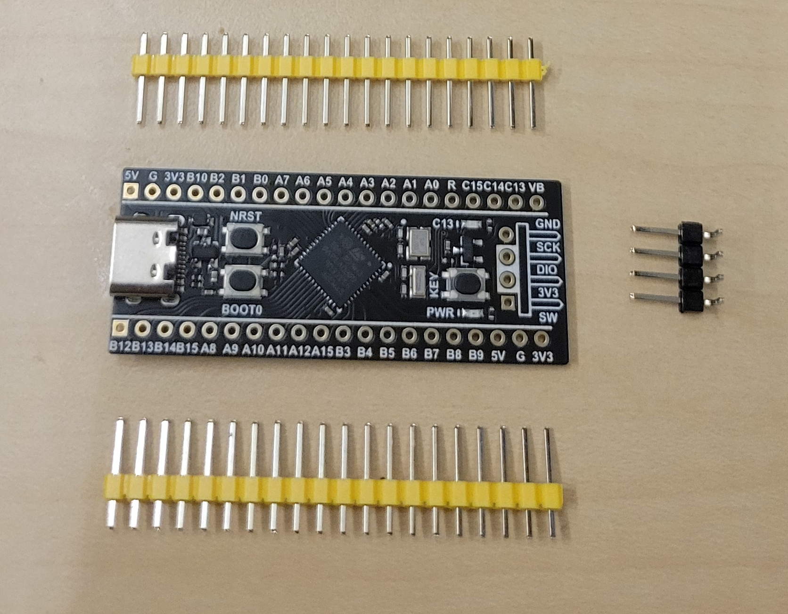
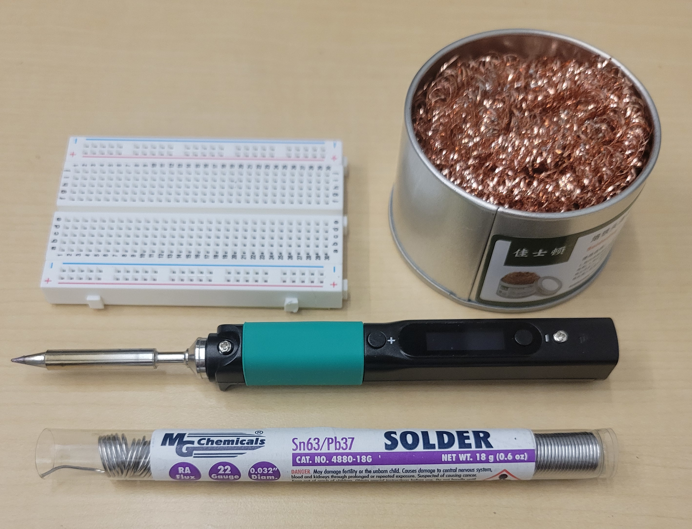
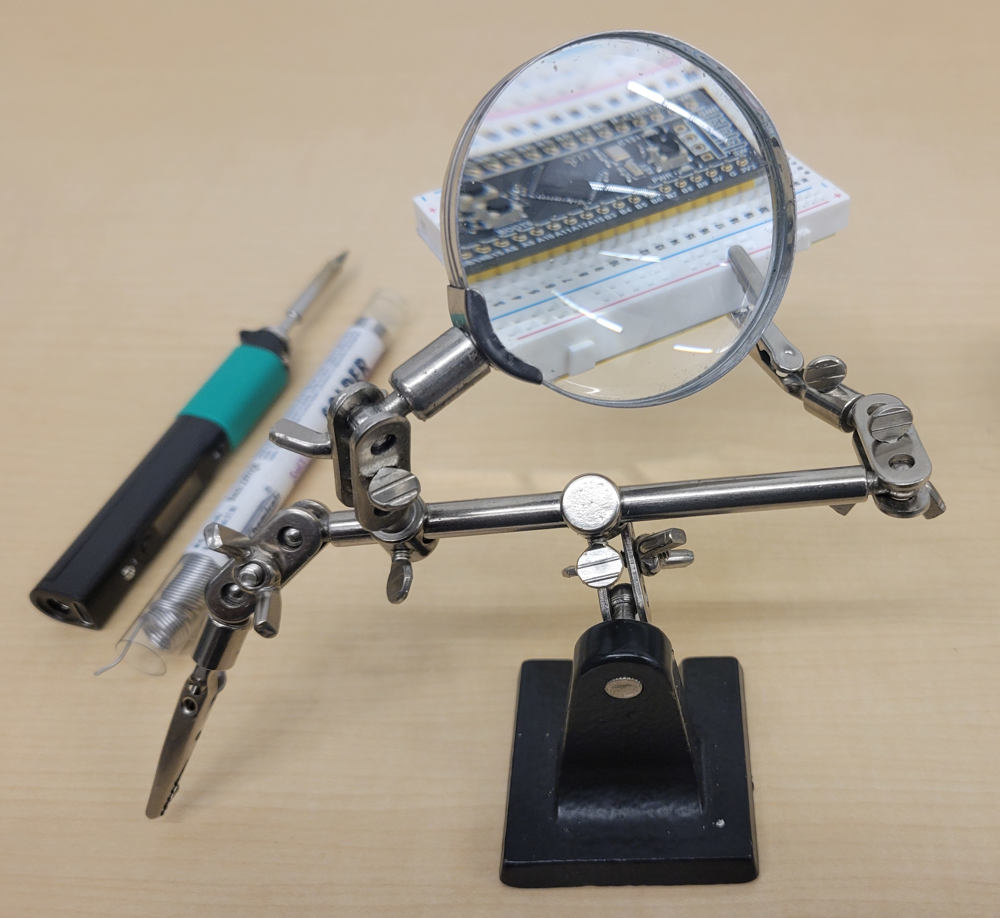
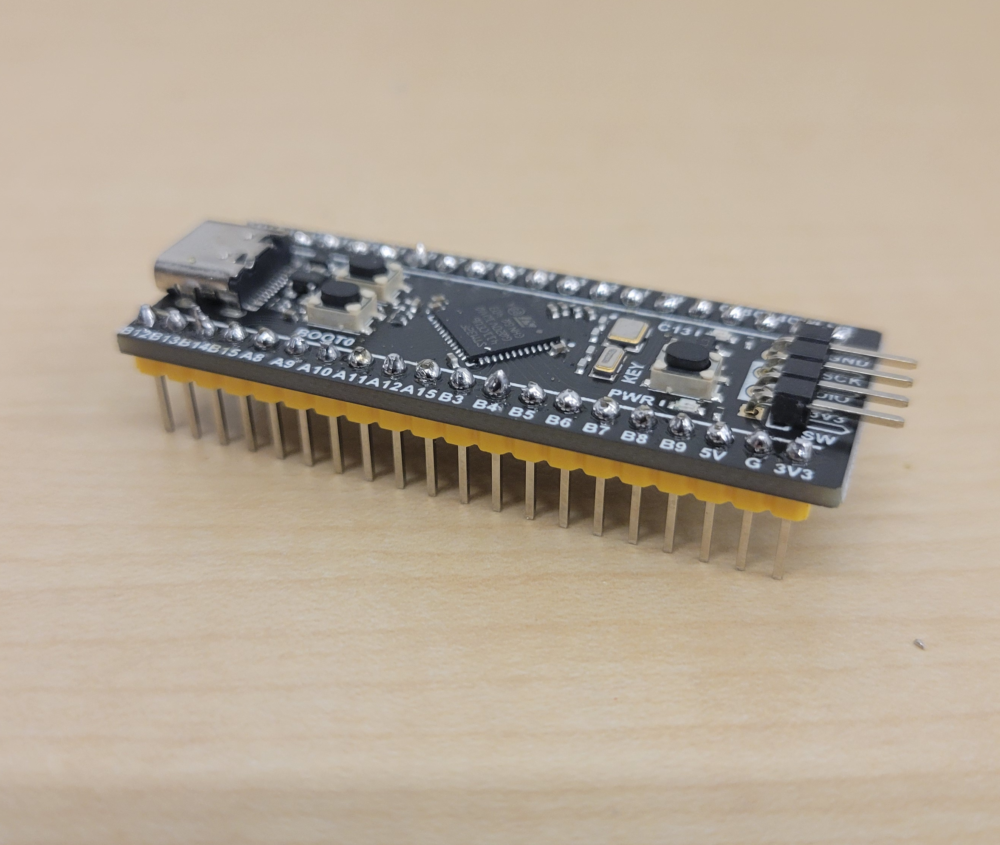
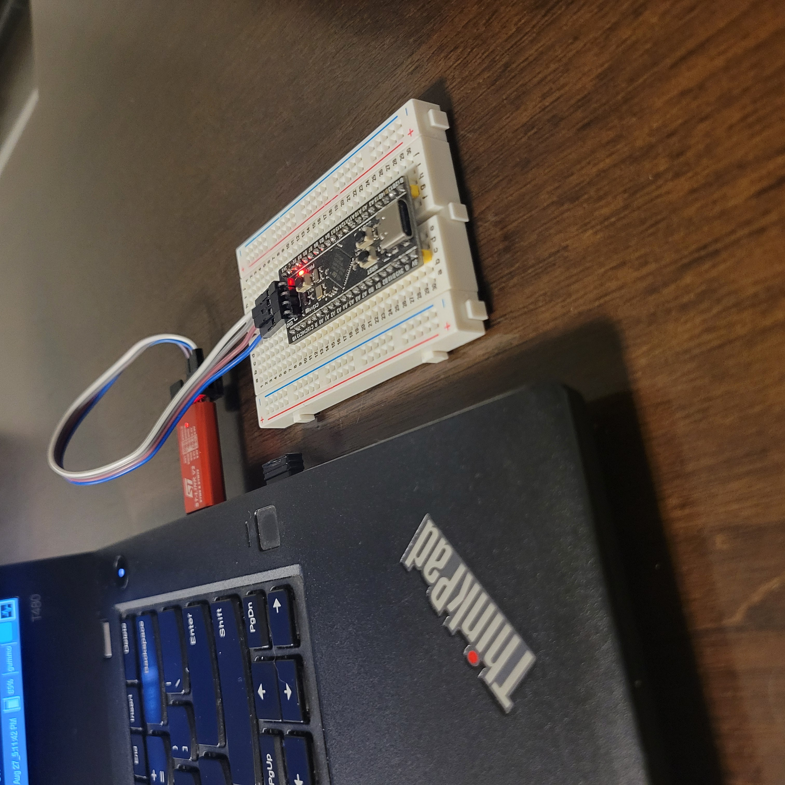

2024-11-08
Messing with Microcontrollers (STM32) — Making an LED Blink the Hard Way
Motivation
My adventures in embedded systems started about a year ago, with Embedded Systems Bare Metal Programming, a paid course taught by Israel Gbati. This course is highly-regarded, comprehensive, and teaches the student to write bare metal firmware without the use of libraries and header files. Throughout the course, the instructor stresses the importance of referencing and understanding the chip manual and board documentation, along with other professional best practices. The course is taught using C, but I had worked through the infamous K&R book a couple of years ago, so I was comfortable with it. So I worked through the first projects in the course, consulted textbooks, videos, articles, and LLMs (ChatGPT) until I had constructed a satisfactory mental model of embedded systems and how they work.
Wanting to learn and challenge myself further, I decided my goal was going be the implementation of drivers for the various peripherals of an STM32-based development board. I would be using the Rust programming language. What better way to begin than by blinking an LED?
Goal: Blinking an LED on the STM32F411 "BlackPill" Development Board using embedded Rust
Embedded Concepts
Bare Metal
Bare Metal (MCU) → PAC → HAL → BSP
- Bare Metal represents the lowest level of abstraction in embedded programming. In a bare metal environment, no code has been loaded before your program, including the standard library.
- Peripheral access crate (PAC) is a Rust abstraction layer that provides access to peripherals. It is generated from System View Description (SVD) files provided by the chip vendor.
- The Hardware abstraction layer (HAL) is implemented on top of of a PAC.
- A Board-Support Crate (BSP) provides a high-level interface for a specific board.
Memory-Mapped I/O
- Memory-mapped I/O is a construct where the the memory space of the microcontroller is mapped to peripheral registers. Memory addresses pertaining to peripheral registers are referenced (cast to pointer type) and manipulated directly. The Memory Map for a microcontroller can be found in the chip's reference manual.
- Accessing peripheral registers must be done in a "volatile" way. The state of memory can change due to HW or other events outside of the CPU's control, thus we restrict the compiler from implementing some optimizations:
- Caching is disabled
- Omitting multiple reads or writes to the same memory address is disabled
Tool Chain
- Host: Lenovo T480 running Arch Linux
- HW debugger: ST-Link V2
- IDE: Neovim with LSP configured for Rust
- SW Debugger:
arm-none-eabi-gdb
Development Board (Target)
- Development board: WeAct Studio BlackPill v3.1
MCU is STM32F411CEU6
- 512 KB of flash
- 128 KB of SRAM
- Runs at 100 Mhz USB-C connector with 3.3V 100mA LDO regulator 25mhz and 32.768 KHz crystals on board Peripherals
- UART, I2C, SPI, I2S
- ADC multiplexed to 10 inputs
- User controlled LED Pin-Out Diagram
- See Pin-Out Diagram
Tools and Consumables
- Soldering iron: PINECEL Smart Mini Portable Soldering Iron
- Solder: Rosin core, .031(8mm), Sn63/Pb37
- Rosin core negates the need for flux
- Desoldering Wick: Soder-Wick Rosin Size 2, 80-2-5
- Tip Cleaner: Brass Sponge
- Helping Hands (magnifying glass and clamps with stand)
- Breadboard
Soldering the Header Pins
Setup
- Mount the headers onto a breadboard, then mount the development board onto the headers
- Use a Helping Hands tool with a magnifier and alligator clips
Technique
- Pre-heat the soldering iron to between 350° and 400°C (375° C)
- Tin the tip for better heat conductivity and to extend the life of the iron
- Avoid excessive heat warpage.
- Avoid crossing the dev board with the iron, i.e. the iron should come in from the periphery and not from across the dev board
- Use desoldering wick as needed
Soldering Results
Cleaning and Equipment Care
- To cleaning the tip, use a brass coil sponge. It is also possible to use a wet sponge, but the rapid cooling of the wet sponse may decrease the life of the iron.
- Tin the iron before turning it off
Connecting the HW Debugger
- The HW debugger is a bridge between the host and the target
- connected to the host via USB
- connects to the target via the Serial Wire Debug (SWD) interface
Writing the LED driver
- See my blink-led repo for full code
Flashing the Firmware
openocd -d -f interface/stlink.cfg -f target/stm32f4x.cfg -c "program <BINARY> verify reset exit"
Success!

References
-
Embedded Rust Book
The Embedded Rust Book. Retrieved from https://docs.rust-embedded.org/book/. -
Embedded Systems Course by Israel Gbati
Gbati, I. Embedded Systems Programming on ARM Cortex-M. Udemy Course. Retrieved from https://www.udemy.com. -
STM32F411CEU6 Reference Manual
STMicroelectronics. (n.d.). RM0383: STM32F411xC/E Advanced ARM®-based 32-bit MCUs Reference Manual. Retrieved from https://www.st.com. -
Computer Organization and Design ARM Edition
Patterson, D. A., & Hennessy, J. L. (2016). Computer Organization and Design ARM Edition: The Hardware Software Interface (1st ed.). Morgan Kaufmann. -
WeAct. STM32F411CE WeAct Black Pill Schematic
Retrieved from https://github.com/WeActTC/MiniSTM32F4x1 -
STMicroelectronics. (n.d.). STM32F411CE MCU Data Sheet.
Retrieved from https://www.st.com. -
Proietti, M. (2017). Mastering STM32
Leanpub. Retrieved from https://leanpub.com/mastering-stm32.